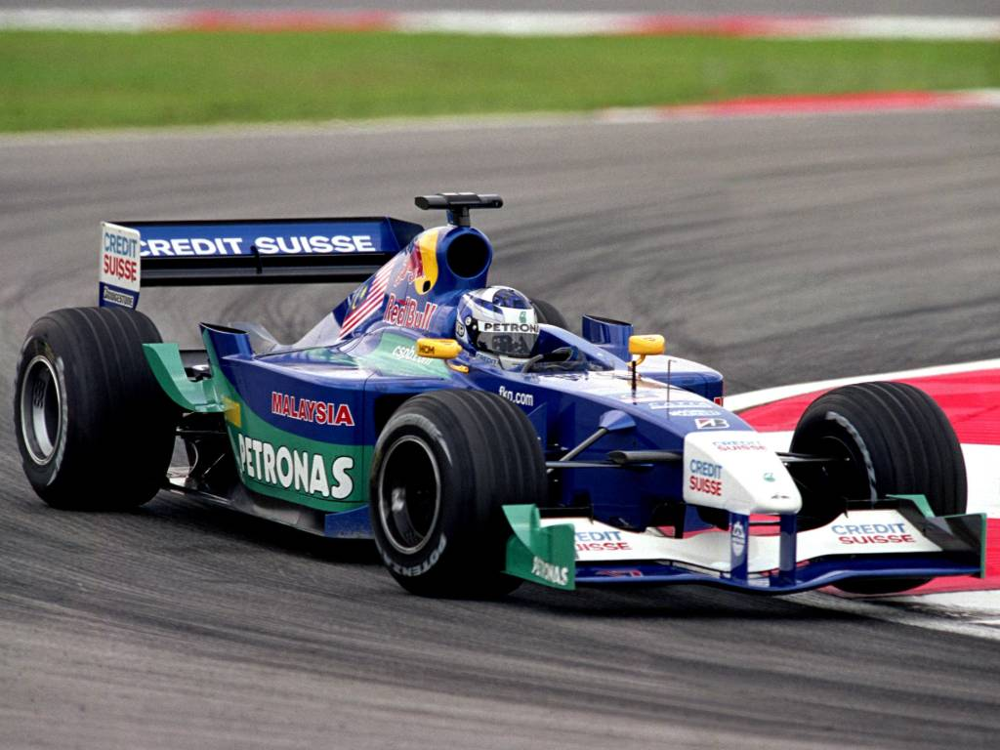
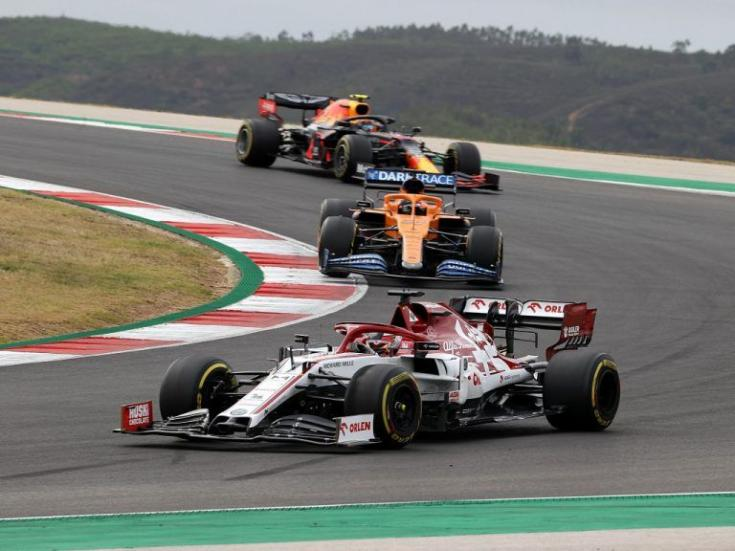
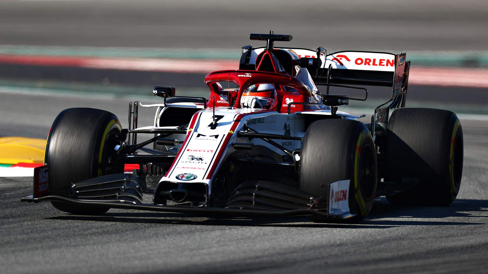
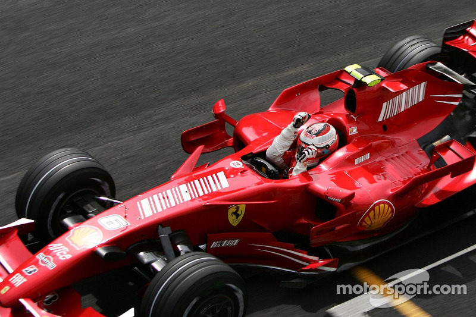

(Espoo, 1979. október 17. – )
finn autóversenyző, 2007 Formula–1-es világbajnoka.
Kimi Räikkönen
Legismertebb beceneve az Iceman, azaz Jégember, amely nyugodt természetére és északi származására utal. A felirat bukósisakján, illetve bal alkarjára tetoválva is látható.
2010-től ralizni kezdett, majd 2012-től visszatért a Formula–1-be a Lotus F1 Team csapat versenyzőjeként. Több ízben sikerült felállnia a dobogóra, Abu-Dzabiban csapata első győzelmét is megszerezte. 2014-ben visszaigazolt a Ferrarihoz. 2018-ban jelentették be, hogy a szerződését a Ferrarinál nem hosszabbítják meg, ezért a 2019-es versenyévadtól az Alfa Romeo pilótája lett.
Csapatvezetői tevékenysége
2004 novemberében Kimi Räikkönen és menedzsere, Steve Robertson bejelentették, hogy Räikkönen Robertson Racing néven Formula–3-as csapatot alapítanak, aminek operatív vezetését Robertson végzi, a finn versenyző gyakorlatilag csak a nevét és a pénzt adja hozzá.
Becenevek
Kimi Räikkönen „hivatalos beceneve” az Iceman, azaz Jégember. Ezt a nevet a McLaren csapatfőnöke, Ron Dennis adta neki utalásként nyugodt természetére, illetve északi származására. Az "Iceman" felirat Räikkönen bukósisakján illetve bal alkarjára tetoválva is látható. Másik beceneve, melyet a szerelők adtak neki, a Kimster, a Kimi és Monster szavak összetételéből. Ezt a 2004-es belga GP-n kapta, mert úgy vezetett, mint egy igazi rém. Említik továbbá Kimppa és Rakka néven is.
Eredményei
| Nagydíjak száma | 332 (329 rajt) |
| Világbajnoki címek | 1 (2007) |
| Győzelmek | 21 |
| Dobogós helyezések | 103 |
| VB-pontok | 1863 |





Formula–1-es rekordjai
2005-ben és 2008-ban is beállította Michael Schumacher rekordját, aki a 2004-es szezon során 10 alkalommal futotta meg a verseny leggyorsabb körét.
Michael Schumacher után ő rendelkezik a legtöbb leggyorsabb körrel (46) a Formula-1 történetében.
2008-ban hat egymást követő futamon (Spanyolországban, Törökországban, Monacóban, Kanadában, Franciaországban és Nagy-Britanniában) is megfutotta a verseny leggyorsabb körét. Ugyanez egy szezonon belül rajta kívül csak Alberto Ascarinak sikerült 1952-ben.
Räikkönen volt az első versenyző Nigel Mansell 1989-es brazíliai győzelme óta, aki megnyerte a ferraris debütáló versenyét. Rajtuk kívül ez a tett csak Juan-Manuel Fangionak (1956) sikerült előttük, míg később, 2010-ben Fernando Alonso is megszerezte a győzelmet első ferraris versenyén, a 2010-es bahreini nagydíjon.
A 2008-as francia nagydíjon Räikkönen megszerezte a Ferrari kétszázadik pole-pozícióját.